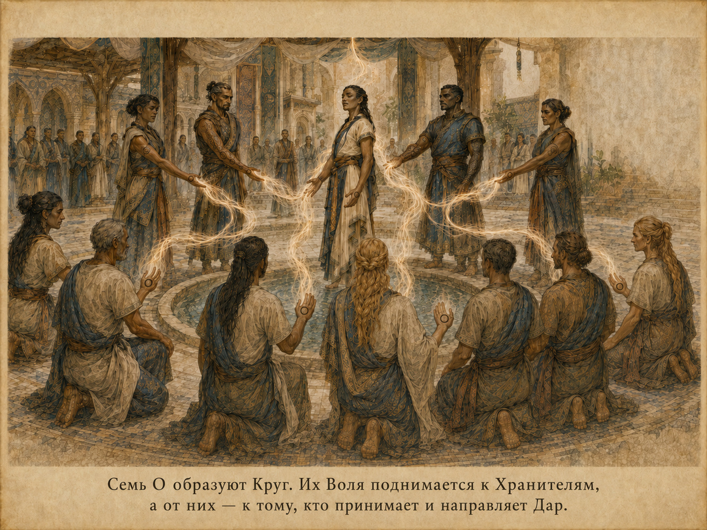
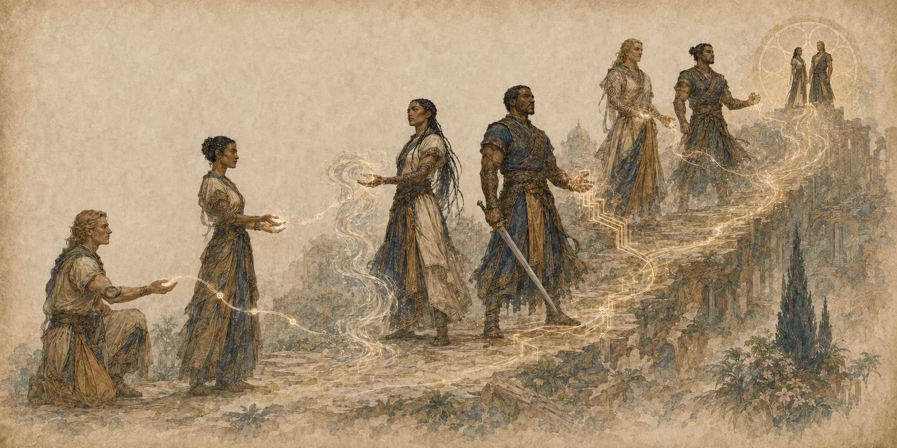
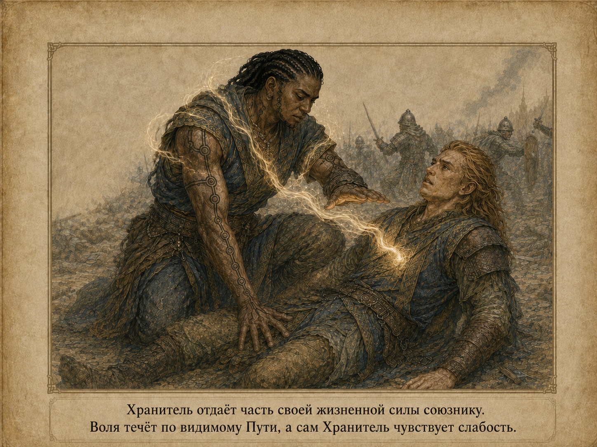
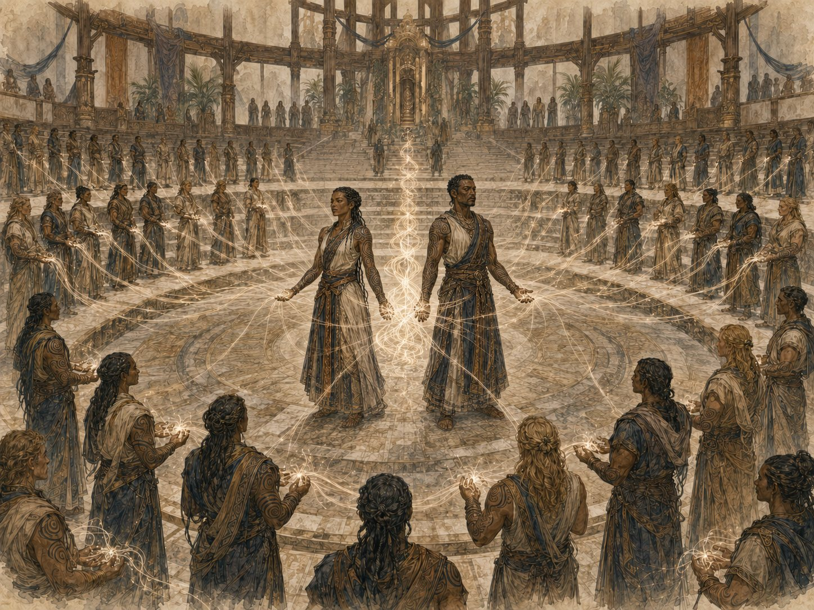
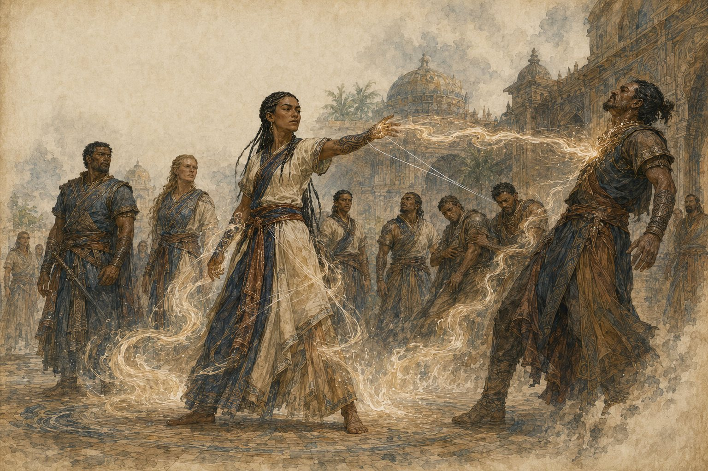
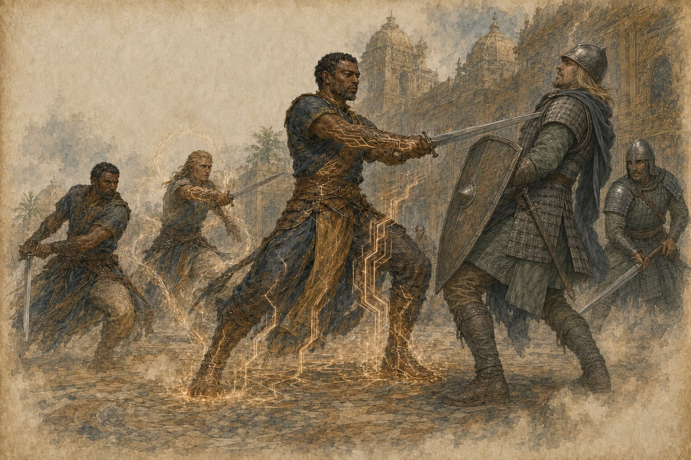
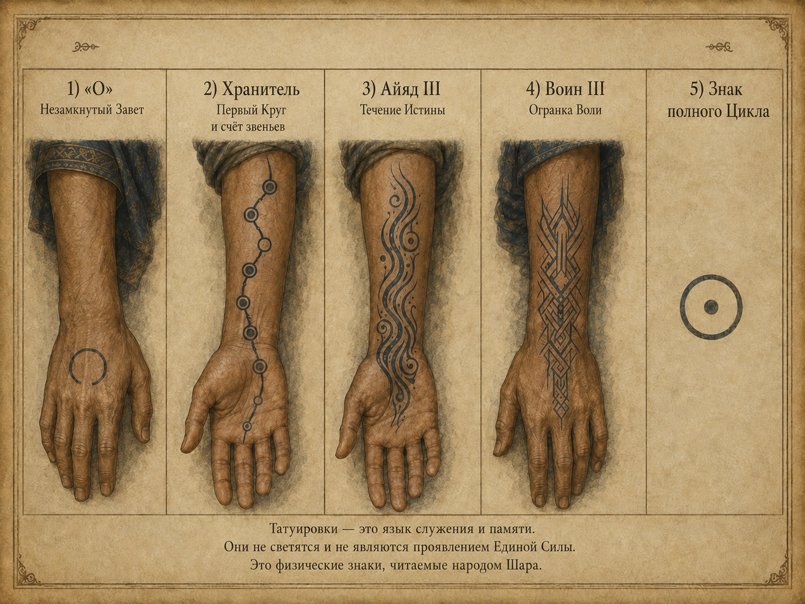
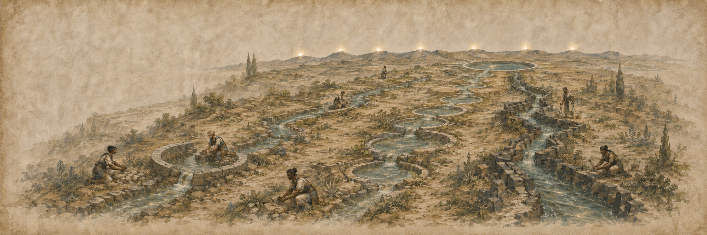

Два пути. Одна Воля. Пятиступенчатая система, в которой жизненная сила миллионов поднимается от О через Хранителей и высшие ступени к Двойному Сосуду.
«Единая Воля Шары» — религиозно-кастовая Иерархия, в которой жизненная сила миллионов движется снизу вверх по пятиступенчатой системе. Её философия строится не на страхе и не на дисциплине как самоцели, а на принятии, стойкости и способности вместить в себя чужую Волю, не сломавшись.
Механически Единая Воля усиливает прежде всего тело и устойчивость носителя: увеличивает компонент максимума хитов, получаемый от Костей Хитов, даёт возрастающий бонус к КД, усиливает инициативу и спасброски, а на высших рангах открывает регенерацию и уникальные способы управлять накопленной Волей. Начиная с III ранга система разделяется на Путь Айяд и Путь Воина; на V ранге оба пути вновь сходятся в функции Сосуда.
• Кости Хитов: коэффициент текущего ранга умножает только компонент максимума хитов, полученный от Костей Хитов. Бонус от Телосложения и прочие плоские прибавки не умножаются.
• Бонус КД: +2 / +3 / +4 / +6 на II / III / IV / V рангах. Это плоский бонус Единой Воли поверх выбранной законной КД.
• Характеристики: на каждом ранге II–V персонаж получает новый пакет +2 к двум разным характеристикам. Пакеты накопительны.
• Два пути: Айяд выражают Волю через направление Единой Силы и особые техники; Воины удерживают её телом, реакцией и оружейным ударом.
• Временные хиты: ряд способностей создаёт временные хиты как резерв накопленной жизненной силы. Они подчиняются обычным правилам и не складываются между собой.
• Парадокс Сосуда: максимальная мощь V ранга сопровождается семилетним циклом физиологического распада и ритуалом Вознесения.

На I и II рангах путь един. На III ранге он разделяется: направляющий может стать Накша, не-направляющий после Испытания Стойкости — Клинком Воли. На IV ранге ветви продолжаются как Накша-благословенная и Воитель Предначертания. V ранг снова является общей вершиной, однако Сосуд сохраняет наследие того пути, по которому пришёл к вершине.

| Ступень | Путь Айяд | Путь Воина |
|---|---|---|
| I | О | О |
| II | Хранитель Предначертания | Хранитель Предначертания |
| III | Накша | Клинок Воли |
| IV | Накша-благословенная | Воитель Предначертания |
| V | Ш'боан или Ш'ботай-айяд | Ш'ботай-Воитель (мужчина) |
• Ш'боан: женщина-айяд, прошедшая Накша III → Накша-благословенная IV → Ш'боан V.
• Ш'ботай-айяд: мужчина Накша III может быть избран непосредственно в V ранг, минуя политически закрытый для него IV ранг. Великая Церемония одновременно предоставляет ему пакет характеристик IV ранга, пакет V ранга и уникальные способности IV ранга Пути Айяд.
• Ш'ботай-Воитель: мужчина Воитель Предначертания IV может быть избран Ш'ботаем V. Он не приобретает способность направлять Единую Силу.
• Женщина-Воитель обычно завершает путь на IV ранге.
Все числовые значения в таблице являются итоговыми для текущего ранга, если прямо не сказано обратное. Новый пакет характеристик +2/+2 на каждом ранге II–V, напротив, является накопительным и добавляется к пакетам предыдущих рангов.
| Ранг | Новый пакет характеристик | Скорость ходьбы | Инициатива | Спасброски | Бонус КД | Хиты | Бонус к СЛ плетений |
|---|---|---|---|---|---|---|---|
| I — О | временно −1 Тел | обычная | −1 | −1 ко всем | — | −5 к максимуму | — |
| II — Хранитель | +2 к двум; предел 22 | — | +2 | +1 ко всем | +2 | Кости Хитов ×1,5 | +1 (если направляющий) |
| III — Накша | +2 к двум; предел 22 | — | +2, преимущество | +1 ко всем; преимущество Тел | +3 | Кости Хитов ×2 | +2 |
| III — Клинок | +2 к двум; предел 22 | — | +2, преимущество | +1 ко всем; преимущество Тел | +3 | Кости Хитов ×2 | — |
| IV — Накша-благ. | +2 к двум; предел 24 | — | +3, преимущество | +1 ко всем; преим. Тел; иммунитет к Испугу | +4 | Кости Хитов ×2,5 | +3 |
| IV — Воитель | +2 к двум; предел 24 | +5 фт | +3, преимущество | +1 ко всем; преим. Тел; иммунитет к Испугу | +4 | Кости Хитов ×2,5 | — |
| V — Сосуд | +2 к двум; предел 26 | +10 фт | +6, преимущество | +1 ко всем; преим. Тел; иммунитет к Испугу; Легендарная устойчивость 3/день | +6 | Кости Хитов ×3,5; затем +80 | +5 только Сосуд-направляющий |
При получении каждого ранга со II по V выберите две разные характеристики и увеличьте каждую на 2. На каждом новом ранге выбор производится заново: можно повторно выбрать ранее повышенные характеристики или выбрать другие. Повышение Единой Воли может увеличить характеристику максимум до 22 на II–III рангах, до 24 на IV ранге и до 26 на V ранге. Если персонаж напрямую переходит Накша III → Ш'ботай V, Великая Церемония последовательно предоставляет ему пакет IV ранга и пакет V ранга.
Штраф −1 к Телосложению I ранга является временной ценой состояния О. При переходе на II ранг исходное значение Телосложения восстанавливается до применения нового пакета +2/+2.
Коэффициент Единой Воли умножает только компонент максимума хитов, полученный от Костей Хитов. Бонус от модификатора Телосложения, +80 хитов V ранга и любые иные плоские прибавки к максимуму хитов добавляются после умножения.
• Итог = ⌊компонент Костей Хитов × коэффициент текущего ранга⌋ + бонус хитов от Телосложения + прочие плоские модификаторы.
• На V ранге после этого отдельно прибавляется +80 к максимуму хитов.
• Дробный результат умножения округляется вниз.
• Коэффициенты рангов не перемножаются: ×2,5 на IV заменяет ×2 на III.
Пример. Воин 10-го уровня с к10 и итоговым Телосложением 20 (+5): компонент Костей Хитов = 10 + 9×6 = 64. На IV ранге: 64×2,5 = 160; бонус Телосложения = 10×5 = 50; итоговый максимум до иных плоских бонусов = 210 хитов.
При получении нового ранга Иерарх сохраняет уникальные способности всех нижестоящих рангов своего пути, если более высокая способность прямо не заменяет их. Способности другого пути автоматически не приобретаются. Числовые ранговые значения — КД, коэффициент Костей Хитов, инициатива, скорость и бонус к СЛ плетений — используются по текущему рангу и не складываются со значениями предыдущих рангов.
• V ранг является одной общей ступенью. Сосуд сохраняет уникальные способности своего пути.
• Сосуд-направляющий получает +5 к СЛ плетений; Сосуд-Воитель не получает бонусов к плетениям и не приобретает способность направлять.
• Поглощение Народа является общей способностью V ранга, но имеет различную природу у Айяд и Воителя.

Начиная с III ранга общая линия уникальных способностей разделяется. Способности Пути Айяд описаны в разделе V, способности Пути Воина — в разделе VI. Общие числовые преимущества III–IV рангов приведены в таблице прогрессии Иерархии. На V ранге пути вновь сходятся в общей ступени Сосуда.

• Сосуд-айяд использует Единую Силу, но способность не является обычным плетением: у неё нет уровня, ячейки и Таланта; она использует собственную СЛ 19. Если Сосуд не может направлять Единую Силу из-за полного отсутствия доступа к Истинному Источнику, эта версия способности недоступна.
• Сосуд-Воитель выпускает накопленную в теле Волю миллионов без направления Единой Силы. Способность не требует доступа к Истинному Источнику и не является плетением.
• В обоих случаях на Поглощение Народа не действуют бонус к СЛ плетений, ангреалы, са'ангреалы, Волна Силы или общие усиления плетений.
Айяд — направляющие Шары. Их путь связывает классовое направление Единой Силы с накопленной Волей Иерархии. Ранговый бонус к СЛ усиливает только обычные плетения, если специальное правило не говорит обратного.
Особая шаранская техника, известная как «Объятие Пустоты». Она использует направление Единой Силы, но не является обычным плетением WoT 5e.
Сосуд-айяд сохраняет способности Накша и Накша-благословенной своего пути, получает общий пакет V ранга и бонус +5 к СЛ плетений. Прямой Ш'ботай-айяд, избранный с III ранга, во время Великой Церемонии также получает уникальные способности IV ранга Пути Айяд и пакет характеристик IV ранга.

Путь Воина доступен только персонажам, не способным направлять Единую Силу. Накопленная Воля удерживается телом и выражается в оружейной точности, реакции и несокрушимости. Воитель Предначертания-мужчина может быть избран Ш'ботаем V ранга.
Ш'ботай, пришедший с Пути Воина, сохраняет уникальные способности Клинка и Воителя, получает общий пакет V ранга и Поглощение Народа. Он не приобретает способность направлять Единую Силу, не получает бонус +5 к СЛ плетений и не наследует способности Пути Айяд.

Если Иерарх способен направлять Единую Силу, он прибавляет к обычной СЛ спасбросков своих плетений бонус текущего ранга: +1 на II, +2 на III, +3 на IV и +5 на V. Значение текущего ранга заменяет предыдущее. Этот бонус сам по себе не увеличивает броски атаки плетением.
• Единая Воля не предоставляет дополнительных ячеек, дополнительных известных плетений или отдельного ресурса дополнительных применений плетений.
• Количество ячеек и доступных плетений определяется классом и уровнем персонажа по правилам WoT 5e.
Бонус к СЛ плетений Единой Воли действует одновременно с усилением ангреала или са'ангреала. Иерархия сама по себе не увеличивает броски атаки плетением, дополнительные кубики урона, дальность или площадь плетения. Если ангреал изменяет эти параметры, его собственные правила применяются независимо. Ангреал не повышает фиксированную СЛ Поглощения Воли или Поглощения Народа.
Отдельные сюжетные практики, такие как Круг Алхейн, не считаются автоматически обычным кругом направляющих и требуют собственного правила, если используются в игре.
| Категория | Правило |
|---|---|
| Испытания и ритуалы | Используют прямо указанную фиксированную СЛ: 13; 15; 14/16/18; 17. Ранг, бонус мастерства и бонус к СЛ плетений к ним не добавляются. |
| Поглощение Воли / Поглощение Народа / Воля Множества | Используют собственные фиксированные СЛ 14 / 17 / 19 / 19. Бонус к СЛ плетений не применяется. |
| Неудержимый удар | СЛ = 8 + бонус мастерства + модификатор Телосложения Клинка/Воителя. |
| Обычные плетения | Классовая СЛ плетения + ранговый бонус к СЛ плетений Единой Воли; далее применяются специальные временные бонусы, если они активны. |
Универсальная формула «СЛ Единой Воли» не используется. Если способность содержит фиксированную СЛ, применяется она; если содержит формулу — применяется эта формула; для плетений действует собственная система направляющего.
Временные хиты из разных источников не складываются. При получении нового значения персонаж выбирает, сохранить ли текущие временные хиты или заменить их новым значением. Выход из ауры после получения временных хитов не снимает уже полученные временные хиты, если конкретная способность не говорит обратного.
| Раунд | Поток | Неизбежная потеря | Спасбросок | При провале |
|---|---|---|---|---|
| I | 10 О | 20% максимума хитов | Телосложение СЛ 14 | ещё 20% максимума |
| II | 20 О | 20% максимума хитов | Телосложение СЛ 16 | ещё 20% максимума |
| III | 30 О | 20% максимума хитов | Телосложение СЛ 18 | ещё 20% максимума |
Обычное добровольное окончательное снятие связи с V рангом невозможно. Такое снятие может существовать только как исключительный сюжетный ритуал или внешнее вмешательство, определённое Мастером.
На II–V рангах Иерарх совершает с помехой проверки Харизмы (Обман) и Харизмы (Убеждение), когда осознанно пытается склонить другое существо к действию, которое сам понимает как противоречащее интересам Единой Воли. Это не лишает персонажа свободы действий и не является детектором абсолютной истины.
| Ранг | Ожидаемая продолжительность / срок | Физиология |
|---|---|---|
| I — О | 50–65 лет | Хроническая отдача ускоряет биологическое старение. Уже пережитое старение не откатывается при выходе из системы. |
| II — Хранитель | 90–110 лет | Входящая Воля компенсирует отдачу; старение заметно замедляется после среднего возраста. |
| III — Накша / Клинок | 140–170 лет | Тело стабилизируется; дальнейшее физиологическое старение значительно замедлено. |
| IV — Накша-благ. / Воитель | 220–260 лет | Визуальное старение почти останавливается; организм самовосстанавливается; иммунитет к болезням. |
| V — Сосуд | до 7 лет пребывания Сосудом | Максимальная сила сопровождается нарастающей деградацией; нормальный финал цикла — Вознесение. |
Числа II–IV являются ожидаемой продолжительностью жизни, а не жёстким таймером смерти. Получение более высокого ранга не уменьшает хронологический возраст и не вызывает мгновенного омоложения; оно изменяет дальнейшую физиологию. Понижение ранга или снятие связи также не вызывают мгновенного «догоняющего старения»: организм начинает стареть согласно новому состоянию с текущего физиологического уровня.
Начиная с IV ранга Иерарх имеет иммунитет к болезням. При получении IV ранга существующие обычные болезни прекращаются, если описание конкретной болезни прямо не запрещает такое устранение. Этот иммунитет не предоставляет автоматически иммунитет к ядам, состоянию «Отравлен», некротическому урону, аномальным эффектам или паразитам, если они механически не определены как болезнь.
Татуировки Единой Воли одновременно являются административным языком ранга и пути и мифологической биографией носителя. Повышение ранга не стирает предыдущие знаки: новый слой добавляется к уже существующей истории тела.
| Ступень | Мифологические знаки |
|---|---|
| I — О | «Незамкнутый Завет»: открытое кольцо как память о прерванном старом порядке. |
| II — Хранитель | «Первый Круг» и «Счёт Звеньев». |
| III — Айяд | «Течение Истины»; «Ключ Привязки». |
| III — Воин | «Огранка Воли»; «Боевой Счёт». |
| IV — Айяд | «Три Голоса» и региональные/должностные знаки. |
| IV — Воин | «Кристалл Многих»; «Аура Командования». |
| V — Сосуд | «Пять Лиц Алхейн»; «Письмена Народа»; «Маска Суверена»; «Память Алхейн». |
Пять колец V ранга изображают пять ступеней самой Единой Воли, а не перечень должностей, которые конкретный Сосуд обязательно занимал лично. IV «Лицо Власти» включает обе формы IV ступени — Накша-благословенных и Воителей Предначертания. Поэтому полный знак V ранга одинаково правомерен у Ш'боан, Ш'ботая-айяд и Ш'ботая-Воителя. Маска Суверена и Память Алхейн являются общими знаками любого Сосуда независимо от пути происхождения.
Письмена Народа появляются после Великой Церемонии как след Воли миллионов и со временем распространяются по телу Сосуда. Они возникают у любого Сосуда независимо от пути происхождения. Сами по себе Письмена не дают игровых бонусов, не являются плетением и не изменяют СЛ, сопротивления или иные параметры.
При официальном понижении знак утраченной ступени сохраняется, но получает стандартизированную метку аннулирования. При окончательном снятии связи татуировки и шрамы физически не исчезают, однако перестают подтверждать действующий ранг. Незаконно разорвавший связь человек может внешне продолжать носить старые знаки до официального аннулирования.

Метки заслуг являются статусными и биографическими знаками и не предоставляют механических преимуществ, если отдельное правило прямо не говорит обратного. Шаранская традиция признаёт Дааль'веир как воинов, сопоставимых с III рангом, однако это лорное признание само по себе не предоставляет им механики Клинка Воли. У Дааль'веир шрамы инициации являются самостоятельным культурным языком и не перекрываются системными татуировками Единой Воли; «Северная Звезда» остаётся клановой, а не ранговой меткой.
Шаранская доктрина описывает движение Воли как три функциональные стадии одной системы, а не как три конкурирующих пути: Исток — О и нижние Хранители; Русло — Накша и носители III–IV рангов обоих путей, удерживающие форму потока; Устье — Ш'боан и Ш'ботай, принимающие Волю целиком. Айяд и Воины — два способа сформировать Русло: один направляет, другой удерживает.

Сосуд является точкой слияния, а не просто «ещё одним Накша»: на V ранге две традиции сходятся в общей функции, оставаясь механически различными по происхождению.
| Ранг | Способность | Путь | Активация | Использование | Краткий эффект |
|---|---|---|---|---|---|
| II | Стойкость Хранителя | Оба | при инициативе / бонусное действие | авто / 1/КО | 5+Тел временных хитов; актив: 1к10+Тел |
| II | Передача Воли | Оба | реакция | 1/ДО | союзник 0 хитов → 1к6; Хранитель теряет столько же |
| III | Поглощение Воли | Айяд | бонусное действие | 2/ДО | видимая цель; 2к8, СЛ 14; IV: 4к8, СЛ 17 |
| III | Волна Силы | Айяд | бонусное действие | 3/ДО | следующая атака/плетение: +2к8 один раз; плетению +2 СЛ |
| III | Холодная стойкость | Айяд | пассив | всегда | преимущество Мдр/Хар против страха, очарования и подавления воли |
| III | Накопленный удар | Воин | пассив | всегда | +2 к атакам оружием; +1к6 силового |
| III | Неудержимый удар | Воин | бонусное действие | 3/ДО | следующая оружейная атака игнорирует сопротивления; без реакций; Сил СЛ 8+БМ+Тел или сбит с ног |
| III | Стойкость Клинка | Воин | реакция | 3/ДО | уменьшение урона 1к8+Тел; при полном снижении — временные хиты |
| III | Холодная стойкость | Воин | пассив | всегда | преимущество на все спасброски Тел; ранний иммунитет к обычному Испугу |
| IV | Аура Воли | Айяд | пассив, 30 фт | всегда | 10 временных хитов союзникам; врагам помеха на спасброски Мудрости |
| IV | Взрыв Воли | Айяд | начало хода, без действия | 1/ДО | до конца хода: попадания +3к8; плетения +3 СЛ; Поглощение даёт ×2 временных хитов; затем истощение |
| IV | Тело как доспех | Айяд | пассив | всегда | 5 хитов в начале хода; отключается в ход Взрыва |
| IV | Кровь Сотен | Воин | пассив | всегда | +3 к атакам оружием вместо +2; +1к8 силового вместо 1к6 |
| IV | Аура Воина | Воин | пассив / реакция | всегда | союзники +2 к атакам и 5 временных хитов; ответная реакционная атака |
| IV | Взрыв Воли | Воин | бонусное действие | 1/ДО | до конца хода +1к8 к оружейным атакам; первое попадание — автокрит; затем истощение |
| IV | Тело как доспех | Воин | пассив | всегда | 5 хитов в начале хода; Взрыв отключает следующий цикл |
| IV | Несломленная Воля | Воин | реакция | 1/ДО | при смертельном снижении до 0 вместо этого остаётся 1 хит, если нет мгновенной смерти |
| V | Сосуд Многих | Оба | бонусное действие | 3/ДО | 8к8 временных хитов; иммунитет к некротическому, пока остаются именно они |
| V | Воля Множества | Оба | действие | 1/ДО | Мдр СЛ 19: провал — без сознания; успех — 5к8 психического; следующий собственный ход — иммунитет ко всему урону |
| V | Легендарная устойчивость | Оба | без действия | 3/день | проваленный спасбросок считается успешным |
| V | Легендарная регенерация | Оба | пассив | всегда | 20 хитов в начале хода; 10 в 6–7 годы; заменяет регенерацию IV |
| V | Поглощение Народа | Оба | действие | 1/ДО | 30 фт, Тел СЛ 19, 6к12/3к12; лечение от проваливших; обновляет Взрыв |
| Сокращение | Значение |
|---|---|
| КО | короткий отдых |
| ДО | продолжительный отдых |
| СЛ | сложность спасброска или проверки |
| БМ | бонус мастерства |
| Тел | Телосложение |
| КД | класс доспеха |